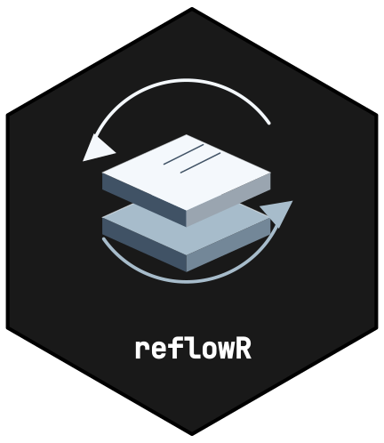

What is reflowR?
reflowR extends the workflowr package with
themed colour schemes, structured analysis pipeline templates, and
utility scripts for reproducible research. It wraps
workflowr::wflow_start() and layers on additional structure
and theming.
Installation
# Install from GitHub (workflowr is installed automatically)
remotes::install_github("CTTIR/reflowR")Quick Start
library(reflowR)
# Create a clinical research project with the standard 8-step pipeline
reflow_init(
directory = "~/projects/my_project",
author = "Your Name",
email = "you@example.com",
scheme = "clinical",
depth = "standard"
)Choosing a Scheme
reflowR schemes are the nine CTTIR v5 topic families:
| Scheme | Label | Accent | Best For |
|---|---|---|---|
spectral |
Spectral imaging | Blue (#0072B2) | Imaging, spectroscopy |
spatial |
Spatial biology | Bluish green (#009E73) | Tissue and spatial assays |
omics |
Molecular data | Reddish purple (#CC79A7) | Sequencing, molecular profiles |
clinical |
Clinical science | Vermillion (#D55E00) | Clinical trials, patient data |
methods |
Learning & inference | Sky blue (#56B4E9) | Statistical and ML methods |
simulation |
Systems & simulation | Orange (#E69F00) | Simulation studies, models |
evidence |
Evidence & discovery | Yellow (#F0E442) | Reviews, meta-analyses |
platform |
Research infrastructure | Black (#000000) | Software, data, infrastructure |
brand |
Science, connected | Blue (#0072B2) | General purpose (default) |
The earlier names basic, code,
special and other remain accepted as aliases
of brand, methods, evidence and
platform.
Preview any scheme:
reflow_preview("clinical")Choosing a Depth
| Preset | Steps | Best For |
|---|---|---|
minimal |
3 | Quick explorations, side analyses |
standard |
8 | Standard research projects, publications |
extended |
12 | Clinical trials, comprehensive studies |
Project Structure
After reflow_init(), your project contains:
my_project/
+-- analysis/ # Rmd pipeline files (rendered to docs/)
| +-- _site.yml # Themed navbar + output config
| +-- index.Rmd # Home page with pipeline table
| +-- about.Rmd # Author card + pipeline docs
| +-- 01_read_data.Rmd # ... pipeline steps
| +-- ...
+-- assets/ # Theme CSS, SCSS, and family icon
+-- code/ # R scripts
| +-- 00_setup.R # Packages, paths, colors, ggplot theme
| +-- utils.R # Helper functions
| +-- formulary.R # Reusable analysis recipes
| +-- data_io.R # Data import/export
| +-- table_helpers.R # Table builders
| +-- plot_helpers.R # Plot constructors
+-- data/raw/ # Raw data (never modify)
+-- data/processed/ # Cleaned data
+-- docs/ # Rendered HTML site
+-- output/ # Figures, tables, models
+-- report/ # Quarto report templateWorking with Your Project
After creation, use standard workflowr commands:
# Render all Rmd files
workflowr::wflow_build()
# Commit and publish
workflowr::wflow_publish("analysis/*.Rmd", message = "Initial build")
# Check status
workflowr::wflow_status()
# View the site
workflowr::wflow_view()
# Set up GitHub Pages
workflowr::wflow_use_github("username", "repo")